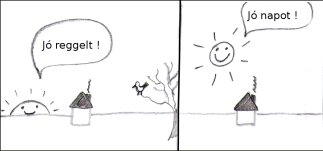
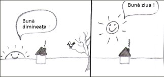
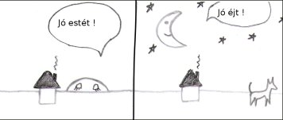
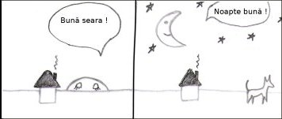

Primii pași · Lecția 001
Saluturi și expresii uzuale
Învață să saluți, să mulțumești și să închei o conversație. Ascultă înregistrările și repetă dialogurile.
În această pagină
În această primă lecție vom învăța câteva expresii uzuale simple, foarte des folosite.
Pentru regulile de pronunțare, citiți pagina despre
alfabet. Ascultă pronunția cu
ajutorul playerelor audio de mai jos, apoi repetă expresiile.
| szia | salut (informal) |
| szervusz | servus |
| szevasz | salut (foarte informal) |
| sziasztok, szervusztok | salutări (pentru mai multe persoane) |
Szia și szervusz sunt salutări folosite cu persoane pe care le tutuim: prieteni apropiați, rude, oameni de vârsta noastră sau mai tineri. Szia este un pic mai familiar decât szervusz. Ambele se pot spune atât la întâlnire, cât și la despărțire. Szervusz se folosește și se pronunță similar cu "servus" din limba română. Szevasz este și mai familiar decât szia și este folosit mai ales de tineri.
Sziasztok și szervusztok sunt formele uzuale când ne adresăm mai multor persoane (aproximativ ca "servustok" folosit de unii români din Ardeal).
Ascultați acum următoarele dialoguri și încercați să repetați replică cu replică:
|
- Szia! - Szervusz, hogy vagy? - Jól, köszönöm. És te? - Köszönöm, én is. - Akkor jó, viszlát. - Viszontlátásra. |
- Salut! - Servus, ce mai faci? (lit. "Cum ești?") - Bine mulțumesc. Dar tu? (lit. "Și tu?") - Mulțumesc, și eu (lit. "... eu și."). - Bine atunci, la revedere. (lit. "Atunci bine, ...") - La revedere. |
|
- Halló? - Halló, mi újság? - Semmi különös. Te hogy vagy? - Jól, kösz. Veled minden oké? - Igen. - Na, akkor jó. Vigyázz magadra! - Köszönöm, te is! |
- Alo? - Alo, ce mai e nou? (lit. "Ce știre?") - Nimic deosebit. Tu ce mai faci? (lit. "Tu cum ești?") - Bine, mersi. Totu-i ok la tine? (lit. "Cu tine totul ok?") - Da. - Bine atunci. Ai grijă de tine! (lit. "Ei atunci bine.") - Mulțumesc, și tu! (lit. "... tu și!")! |
Explicații:
-
La hogy vagy? (ce mai faci?) răspunsul obișnuit este
jól (bine) sau jól, köszönöm (bine, mulțumesc).
Jól este un adverb și provine din jó (bun/bună). Putem răspunde și cu Jól vagyok, köszönöm (sunt bine, mulțumesc, lit. "bine sunt, ...") sau Köszönöm, jól vagyok. - La mi újság? (ce mai e nou?) putem răspunde cu minden oké (totu-i ok), minden rendben (totul e în ordine), semmi különös (nimic deosebit), sau chiar să povestim ce s-a întâmplat de când ne-am văzut ultima dată cu persoana respectivă.
- Viszlát este varianta familiară a lui viszontlátásra (la revedere).
- Kösz este varianta familiară a lui köszönöm (mulțumesc).
- Na este o interjecție folosită și de unii români din Ardeal. Corespunde în general cu "Ei".
Cuvinte noi:
Dialog 1.
hogy cum
vagy (tu) ești, "a fi" la persoana a II-a
és și, iar
is (chiar) și / de asemenea
én eu
te tu
akkor atunci
Dialog 2.
halló alo
mi ce
újság 1. noutate, veste, știre, 2. ziar
semmi nimic
különös deosebit
minden tot
oké O.K.
igen da
vigyázz magadra (ai grijă de tine)
Să exersăm pronunția și să mai învățăm câteva expresii noi:
| hogy vagy? | ce mai faci? (literal: "cum ești?") |
| mit csinálsz? | ce faci? |
| mi újság? | ce mai e nou? (lit. "ce știre?") |
| jól | bine |
| jól, köszönöm | bine, mulțumesc |
| semmi különös | nimic special |
| minden rendben | totul e în regulă |
| minden oké | totul e ok |
| köszönöm | mulțumesc |
| köszi (kösz) | mersi (informal) |
| szívesen | cu plăcere |
| nincs mit | n-ai (pentru) ce |
Köszi (mersi) provine din köszönöm (mulțumesc), cu diminutivul -i, este deci mai informală. Diminutivul -i se folosește de altfel și la nume proprii (ca și în română), de exemplu: Zoltán->Zoli, Katalin->Kati, Ágnes->Ági, Ferenc->Feri, László->Laci etc.
Kösz (mersi) este o formă și mai familiară decât köszi.
Szívesen (cu plăcere), literal: "din inimă", din cuvântul szív (inimă).
Nincs mit (n-ai pentru ce) conține cuvintele nincs (nu este) și mit (din mi (ce), la cazul acuzativ).
| egészségedre! | sănătate! |
| viszontlátásra! | la revedere! |
| viszlát! | la revedere! (informal) |
| igen | da |
| nem | nu |
Egészségedre! (Sănătate!) de obicei zicem când ciocnim paharul sau în situații similare. Literal înseamnă: "Pentru sănătatea ta!"

Vezi ilustrația în română


Vezi ilustrația în română

Jó reggelt (bună dimineața), jó napot (bună ziua),
jó estét (bună seara), jó éjt / jó éjszakát (noapte
bună) putem spune oricărei persoane.
Expresia completă
Jó napot kívánok (O zi bună îți/vă doresc) este și mai politicoasă.
Cuvinte noi:
jó bun(ă) (adjectiv)
nap 1. zi, 2. soare
reggel dimineață
este seară
éj noapte
éjszaka noapte
Vă recomandăm un videoclip cu conținut similar de pe YouTube care vă va ajuta în pronunția corectă: link către videoclip (dar să veniți înapoi ca să putem continua:).
| jó reggelt! | bună dimineața |
| jó napot! | bună ziua |
| jó estét! | bună seara |
| jó éjt! | noapte bună |
| jó éjszakát! | noapte bună |
| (kezét) csókolom | sărut mâna |
Cazul Acuzativ.
Observăm că în expresiile de mai sus am adăugat un
t la fiecare cuvânt (și o vocală în unele cazuri):
napot, éjt, reggelt. "t" este
în maghiară semnul cazului acuzativ. Dacă un substantiv este în cazul acuzativ, acest
lucru se marchează aproape totdeauna cu "t" la sfârșit. Expresia
completă este Jó napot kívánok (literal: "O zi bună îți doresc"), însă
de multe ori zicem numai Jó napot. Cuvântul nap (zi)
este deci complementul direct al verbului "a dori", de aceea îl punem în cazul acuzativ.
În acest caz înainte de t se adaugă o vocală numai pentru a face
pronunțarea mai ușoară, astfel devine napot. Dacă substantivul se
termină în vocala a sau e, aceasta se lungește,
devenind á sau é: este->estét,
éjszaka->éjszakát. Vedeți câteva exemple mai
jos și vom studia aceste cazuri în
lecția 005. când învățăm și pluralul
substantivelor.
Am întâlnit mai devreme propoziția Mit csinálsz? (Ce faci?) În
mit avem din nou t-ul acuzativului. La fel și în
propoziția Nincs mit. ("N-ai ce", ca răspuns la "mulțumesc"). Aici
verbul "a mulțumi" se subînțelege, adică "n-ai ce (să mulțumești)", de aceea avem cazul
acuzativ. Forma la nominativ a pronumelui "ce" este mi. Deci:
mi ce (nominativ)
mit ce (acuzativ)
Exemple:
| - Mi az? - Alma/ körte/ szilva/ banán/ barack/ narancs. |
- Ce-i aia? (lit. "Ce aia?") - (O/Un) măr/ pară/ prună/ banană/ piersică/ portocală. |
|
- Mit eszel? - Almát/ körtét/ szilvát/ banánt/ barackot/ narancsot. |
- Ce mănânci? - (O/Un) măr/ pară/ prună/ banană/ piersică/ portocală. |
Cuvinte noi:
az acel(a)/ace(e)a, ăla/aia
alma măr
körte pară
szilva prună
banán banană
barack piersică/caisă
narancs portocală
eszel (tu) mănânci
| - Mit csinálsz? - Olvasok. - Mit? - Könyvet. |
- Ce faci? - Citesc. - Ce? - O carte. (lit. "Carte.") |
|
- Mit csinálsz? - Olvasok. - Mit? - OL-VA-SOK!! |
- Ce faci? - Citesc. - Ce? - CI-TESC!! |
Cuvinte noi:
olvasok citesc
könyv carte
Explicații:
- În Mi az? se vede o ciudățenie a limbii maghiare, aceea că verbul "a fi" trebuie omis obligatoriu la persoana a III-a în unele cazuri, deci rămâne numai subînțeles. Vom învăța despre acest lucru în lecția 002.
- În primul dialog, cuvintele mi, alma și celelalte nume de fructe sunt la cazul nominativ, cel la care stă totdeauna subiectul propoziției și în română. Nominativul nu are niciun sufix. În al doilea dialog, aceste cuvinte sunt complemente directe, la fel ca könyvet în al treilea dialog, de aceea se pun la cazul acuzativ. Semnul acestui caz este sufixul -t. Dacă cuvântul se termină în vocală sau în consoana n, sufixul se adaugă direct: mit, almát, szilvát, körtét, banánt, iar vocalele a și e se schimbă puțin, adică se lungesc și devin á, é. Dacă cuvântul de bază are altă consoană la sfârșit, apare o vocală de legătură, pentru că maghiarilor le este greu să pronunțe anumite grupuri de consoane la sfârșit de cuvânt. Această vocală se alege în funcție de vocalele din cuvântul de bază, adică se armonizează cu ele, de aceea la barackot și narancsot avem -o-, iar la könyvet -e-. Regulile acestui fenomen, numit armonie vocalică, vor fi explicate în lecția 005.
Atât pentru prima lecție. Am văzut niște expresii uzuale și am învățat despre cazul acuzativ care se marchează cu "-t". Exersați pronunțarea cuvintelor.
Exerciții:
- Răspundeți la întrebări cu cuvintele din paranteză, punându-le la acuzativ (În paranteză dreaptă aveți traducerea literală care vă ajută să găsiți construcția specifică limbii maghiare).
- Ce se poate răspunde la următoarele propoziții? La unele sunt mai multe replici posibile.
|
- Mit eszel? (körte) - ... - Mit csinálsz? (semmi) - ... - Mit olvasol? (újság) - ... - Mit köszönsz? (minden) - ... |
- Ce mănânci? - O pară [Pară]. - Ce faci? - Nimic. - Ce citești? - Un ziar [Ziar]. - Pentru ce mulțumești [Ce mulțumești]? - Pentru tot [Tot]. |
|
- Hogy vagy? - ... - Mi újság? - ... - Vigyázz magadra! - ... - Köszönöm! - ... - Köszönöm az almát! - ... |
- Ce mai faci? - Ce mai e nou? - Ai grijă de tine! - Mulțumesc! - Mulțumesc pentru măr! |
".